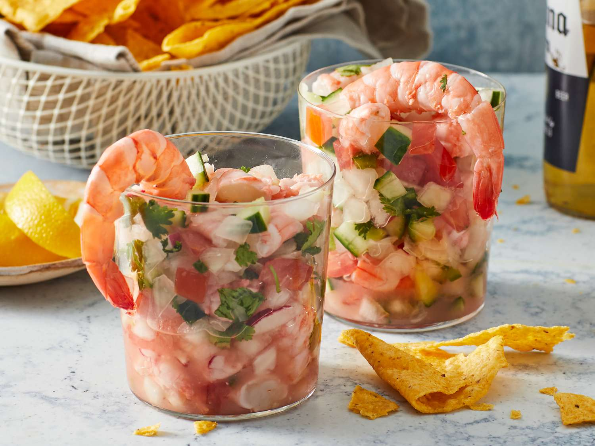

Home
Mexican Ceviche

Description
Mexican ceviche is a refreshing seafood dish made with raw fish or shrimp "cooked" in a tangy marinade
of lime juice, mixed with diced tomatoes,
onions, cilantro, and spicy chilies like serrano or jalapeño.
Often served with crunchy tostadas or avocado, it’s a bright, zesty staple of coastal Mexican cuisine.
Ingredients
- Fresh white fish (like sea bass or tilapia) or shrimp (raw, diced).
- Lime juice (freshly squeezed, to "cook" the seafood).
- Red onion (thinly sliced for sharpness).
- Cilantro (chopped, for freshness).
- Serrano or jalapeño pepper (finely diced, for heat).
Directions
- Dice fish/shrimp into small pieces.
- Marinate in lime juice (20-30 mins until opaque).
- Mix in tomato, onion, cilantro, chili, and salt.
- Chill briefly (10 mins for flavors to blend).
- Serve with avocado and tostadas.